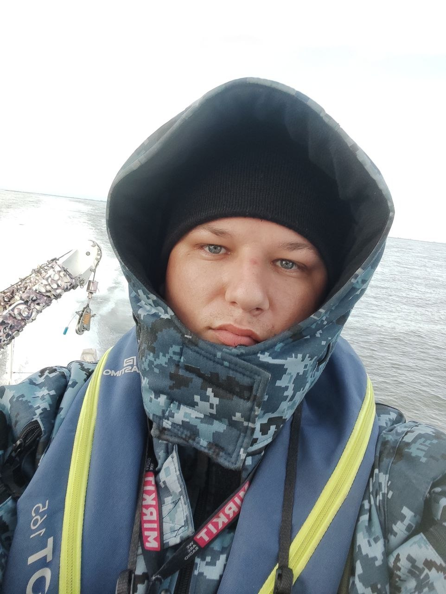

Вітаю! Мене звати Денис, мені 26 років. На сьогоднішній день я поєдную виконання обов'язків військовослужбовця із навчанням на факультеті управління, адміністрування та інформаційних технологій.
Цей сайт відображає мою роботу у сфері цифровізації навчання, де я застосовую отримані знання для проектування електронних курсів у СУН Moodle, розробки STEM-уроків та впровадження принципів універсального дизайну для інклюзивних класів.